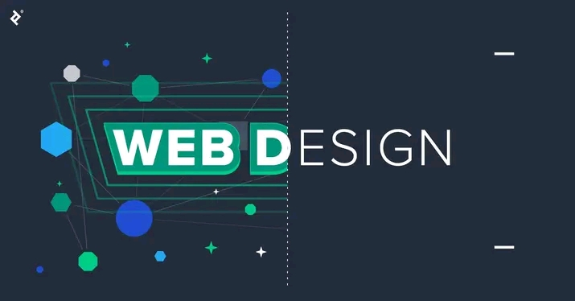

HOME
ABOUT
SERVICES
CONTACT
SKILLS
PROJECTS
PROJECTS

Click to Open Project Details
Featured Project
×
The featured project is a simple static personal webpage.
the webpage has a logo, navigation bar linking to other web
pages, a header, a paragraph and some buttons.
To view the project click the link below.
LINK: FEATURED PROJECT